name: inverse layout: true class: center, middle, inverse --- ## POLI 333B # Media and Norms about Lynching Michael Weaver The University of British Columbia November 26, 2021 --- layout:false .left-column[ ##Outline ] .right-column[ ### Social Norms and Ethnic Violence ### Lynching ### Historical "Big Data" ### Results ] --- .left-column[ ##Norms ] .right-column[ Media can affect **Coordination** - Costs of **organizing** violence - Costs/benefits of social response *to* violence **Persuasion** - Change beliefs about other group ] --- .left-column[ ##Norms ] .right-column[ Media can shape social norms: - alter the norms used to evaluate whether violence is good/bad - alter **whose social norms are relevant** (audience) - can alter norms to **enable** or **discourage** violence Relevant to understanding role of media, how to limit ethnic conflict ] --- ##Lynching in the United States --- template:inverse ###Rebecca Felton, suffragette: <img src="./clippings/felton.png" width="90%" </img> --- layout:false class: left, middle > "**I led the mob** which lynched Nelse Patton and **I'm proud of it**. I directed every movement of the mob. **I wanted him lynched**. I saw his body dangling from a tree this morning, and I am glad of it. **I aroused the mob and directed them to storm the jail**. I had my revolver but did not use it. I gave it to a deputy sheriff and **told him to shoot** Patton and shoot to kill." >> ### William V. Sullivan, former United States Senator, Mississippi --- template:inverse <img src="./clippings/lynching-headline.png" width="90%" </img> --- template:inverse --- template:inverse <img src="./clippings/lynching_innocent.png" width="90%" </img> --- template:inverse 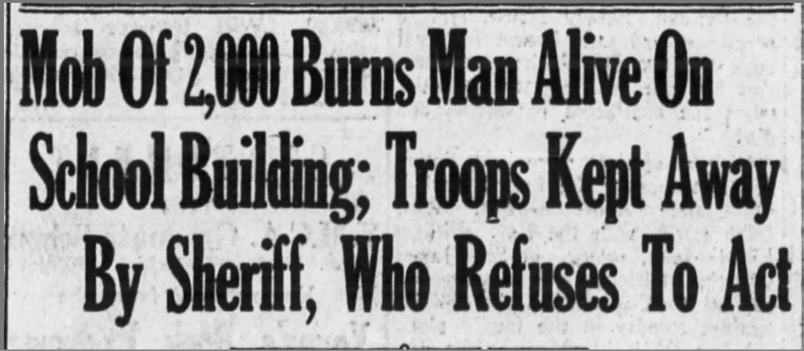 *New York Age* 1/17/1931 --- template:inverse 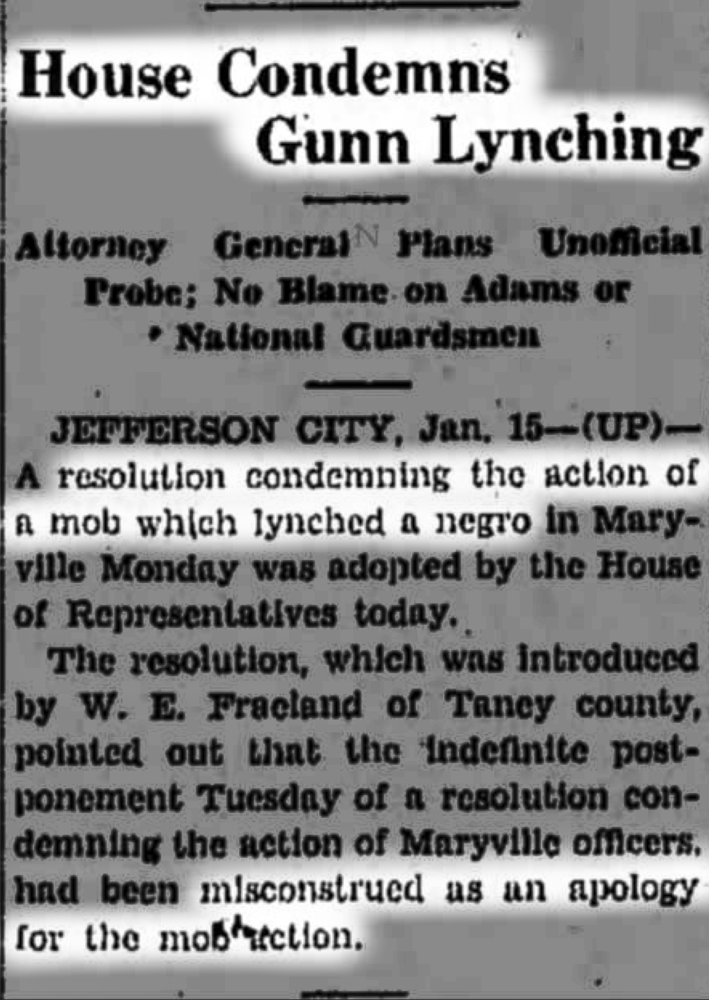 *The Chillicothe Constitution-Tribune* 1/15/1931 --- template:inverse ## How did this transformation take place? --- .left-column[ ##Outline ] .right-column[ ### Publicity ### Lynching ### Historical "Big Data" ### Results ] --- template:inverse ##The argument --- .left-column[ ##Argument ### Violence ] .right-column[ ### Most Violence is "Moral" - (Black 1983, Fiske and Rai 2014) ### Which violence gets to be "legitimate" in a context/locally? These norms are shaped, in part, by control over media ] --- .left-column[ ##Argument ### Violence ] .right-column[ ### Which violence is legitimated (locally)? #### Motive Perpetrators/Victim/Audience #### Opportunity Who has means to frame? - diagnostic/ prognostic framing Who has means to deny framing to others? What are the costs of framing? ] --- .left-column[ ##Argument ### Violence ] .right-column[ ### Violence is publicly legitimated... ##### When perpetrators are powerful. #### 1. Able to frame violence #### 2. Critics coerced into silence #### 3. Challengers face reputational costs #### 4. May be self-reinforcing dynamic - Determine both "facts" and norms ### How can this dynamic be challenged? ] --- template:inverse ## Publicity Shocks --- .left-column[ ##Argument ### Violence ### Publicity ] .right-column[ ### Reach *Geographic scope of audience* When it expands: * New audiences not share local norms on violence .red.bold[*] * Critics not silenced ### Inclusivity *Inclusion of different voices in public debate* When it expands: * Victims and allies no longer silent .red.bold[*] * 'Facts' and justifications around violence contested * **Enabled** by *reach* .footnote[.red.bold[*] See, e.g. Keck and Sikkink 1998] ] --- .left-column[ ##Argument ### Violence ### Publicity ] .right-column[ ### Expanded publicity can #### *Challenge hegemonic local pro-violence discourse* ### and under [some conditions](#conditions): #### *Increase reputational costs to violence* #### *Lead to local efforts to stop violence* ] --- template:inverse ##Lynching and Publicity -- ### Local critics silenced, but... --- .left-column[ ##Argument ###Definitions ###Publicity ###Lynching] .right-column[ ###1. Increase in publicity * Technology + Economic/Political Integration `\(\rightarrow\)` greater reach * Reach + activists `\(\rightarrow\)` inclusion of black voices ] --- template:inverse <img src="./clippings/ida_wells_speech_1.png" width="60%" </img> --- template:inverse <img src="./clippings/ida_wells_speech_2.png" width="60%" </img> "The negroes must have detectives who can go and find out the facts about each lynching and publish them side by side with the versions printed in the Southern newspapers" --- .left-column[##Argument ###Definitions ###Publicity ###Lynching] .right-column[ ###1. Increase in publicity * Technology + Economic/Political Integration `\(\rightarrow\)` greater reach * Reach + activists `\(\rightarrow\)` inclusion of black voices ###2. Publicity breeds criticism and scandal ] --- template:inverse 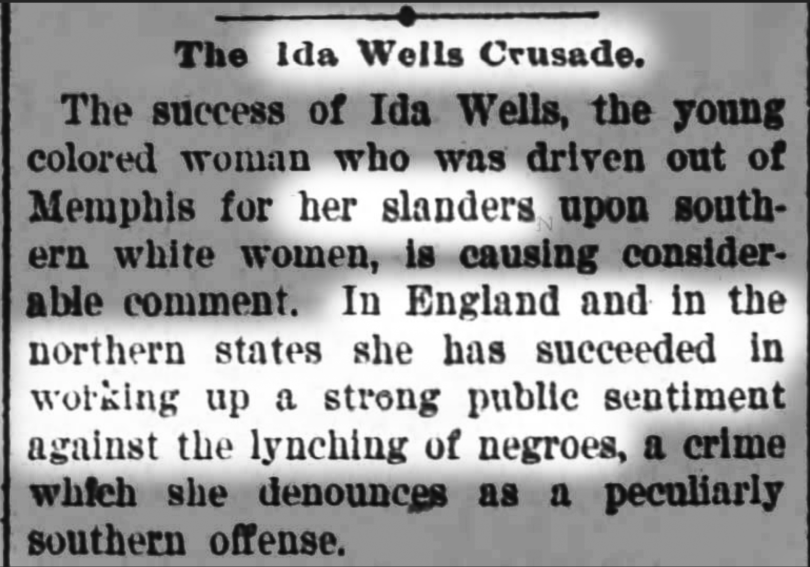 Threatened by Wells's publicity campaign --- class: left, middle > ##### "The Chattanooga News does not lift its voice in behalf of Sheriff Shipp, his deputies or any member of the mob that lynched Johnson. Its **voice is merely raised in behalf of this community.** It submits that even so high and mighty a person as the Attorney General of the United States **has not just cause to hold this community up in contempt of the world** and in effect **publish it abroad as lawless** and firmly set **against the enforcement of law.**" >> "An Official in Contempt of Chattanooga," *The Chattanooga News* --- .left-column[##Argument ###Definitions ###Publicity ###Lynching] .right-column[ ###1. Increase in publicity * Technology + Economic/Political Integration `\(\rightarrow\)` greater reach * Reach + activists `\(\rightarrow\)` inclusion of black voices ###2. Publicity breeds criticism and scandal ###3. Bad publicity turns Southern elites against lynching ] --- template:inverse <img src="./clippings/lynching_bad_reputation.png" width="50%" </img> "our lynching reputation ... is holding the state back in its development." --- .left-column[##Argument ###Definitions ###Publicity ###Lynching] .right-column[ ###1. Increase in publicity * Technology + Economic/Political Integration `\(\rightarrow\)` greater reach * Reach + activists `\(\rightarrow\)` inclusion of black voices ###2. Publicity breeds criticism and scandal ###3. Bad publicity turns Southern elites against lynching ###4. With opposition of local elites, lynching declines ] --- template:inverse --- template:inverse ## Testing the Argument --- .left-column[ ## Testing ### Reach ] .right-column[ ## In the late 19th century ### US saw massive expansion of... ] --- template:inverse ## Rail Networks <iframe width=100% height=500 frameborder='0' src='https://mdweaver.github.io/station_map' allowfullscreen webkitallowfullscreen mozallowfullscreen oallowfullscreen msallowfullscreen></iframe> --- template:inverse class: center, middle ## Telegraph 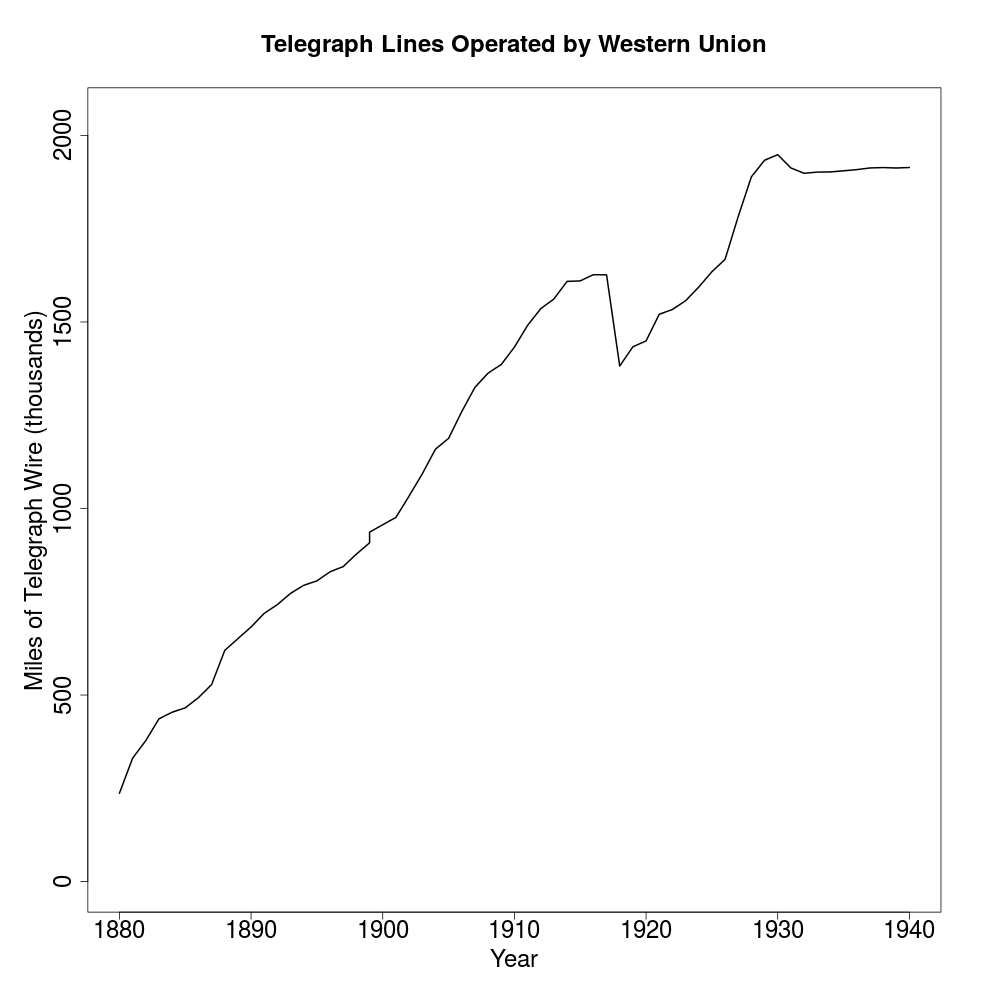 --- .left-column[ ## Testing ###Reach ] .right-column[ ### ... which made the country smaller - ##### reduced travel times for people and information - ##### created a public demand for national news ### Events could have *national* reach ] --- .left-column[ ## Testing ### Reach ] .right-column[ ### But, emergence of a national public sphere... - ##### many structural causes, highly endogenous - ##### monotonic growth ### Cannot use *national* variation ] --- .left-column[ ## Testing ### Reach ] .right-column[ ### ***Local* exposure** to publicity grew **uneven**ly ##### Differential access to communication technology ### `\(\xrightarrow{implies}\)` ##### Differential exposure to new publicity ### What are observable implications at **subnational** level? ] --- .left-column[ ## Testing ### Reach ] .right-column[ ### Four implications of the argument ##### Access determines reach ##### The **probability** that a **lynching is reported:** ##### (1) **increases** as travel times **decrease** between the lynching and the paper. ##### (2) **increases** when the lynching occurred in an area more **central in communication and transportation networks**. ] --- .left-column[ ## Testing ### Reach ] .right-column[ ### Four implications of the argument ##### Greater reach yields criticism, fewer lynchings. ##### **Coverage** of lynching is **more critical**: ##### (3) as the **distance** from the lynching to the newspaper **increases**. ##### Lynching **declines faster**: ##### (4) in places with **more exposure** to national public sphere ] --- template:inverse ##The data --- template:inverse ## "Reach" of Publicity --- template:inverse <iframe width='100%' height='600' frameborder='0' src='https://yale.cartodb.com/u/mdweaver/viz/ffd06ece-8545-11e4-a898-0e018d66dc29/embed_map' allowfullscreen webkitallowfullscreen mozallowfullscreen oallowfullscreen msallowfullscreen></iframe> --- name:newspaper_data .left-column[ ##Data ###Newspapers ] .right-column[ ###"Big data" meets history * Digital newspapers archives * More than 3,000 different papers * **National**, though **uneven** coverage * Big-city dailies, small town weeklies * 9 million+ issues between [1880 and 1940](#digitization_time) * Searchable content * 1.2 million articles mention "lynching" * Words/phrases for [lynching discourse](#discourse_measure) ] --- Digitized Newspaper Issues by State 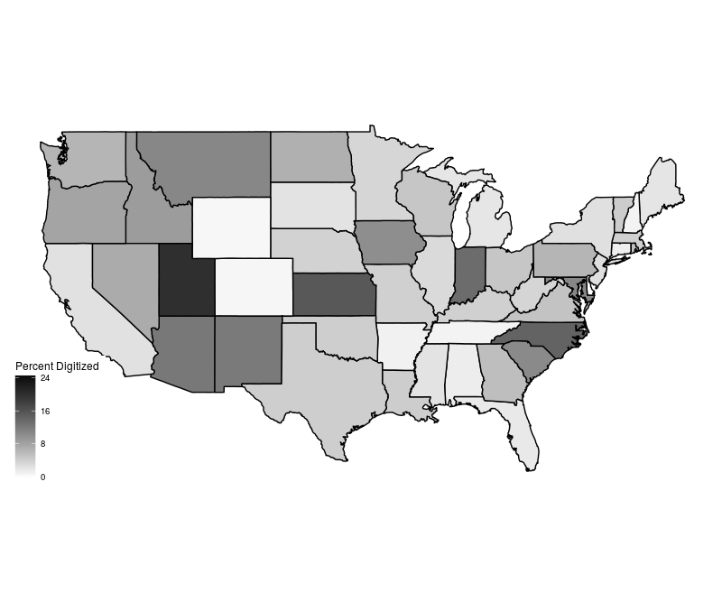 --- template:inverse ## Communication Networks --- class:center, middle <iframe width='100%' height='600' frameborder='0' src='https://mdweaver.github.io/times_year' allowfullscreen webkitallowfullscreen mozallowfullscreen oallowfullscreen msallowfullscreen></iframe> --- .left-column[ ##Data ###Newspapers ###Railroads ] .right-column[ ###Railroad networks Yearly data from 1880 and 1900 * Period of rapid growth (more than doubles) * Network centrality of counties * Travel time between counties * Proxy for telegraph network ] --- template:inverse ## Lynching Events --- .left-column[ ##Data ###Newspapers ###Railroads ###Lynchings ] .right-column[ ###Lynching events * 1880 to 1930s, ~ 4000 *reported* events * Sources: * Historians, Sociologists * NAACP * Chicago Tribune ] --- template:inverse ##Analysis --- .left-column[ ## Analysis ### Reach ] .right-column[ ### Four implications of the argument ##### Access determines reach ##### The **probability** that a **lynching is reported:** ##### ![check][] (1) **increases** as travel times **decrease** between the lynching and the paper. ##### ![check][] (2) **increases** when the lynching occurred in an area more **central in communication and transportation networks**. ] [check]:./check-mark-3-24.png --- .left-column[ ## Analysis ### Reach ] .right-column[ ### Observations * **all issues** appearing **within a week** of a lynching * **Issue - lynching dyads** * **Coverage**: lynching mentioned ### Design * **Panel analysis**, clustered errors * Year, publication, lynching county fixed effects * Publication-county, lynching-county covariates ] --- class: center, middle Probability of lynching coverage by railroad travel time (Residual) 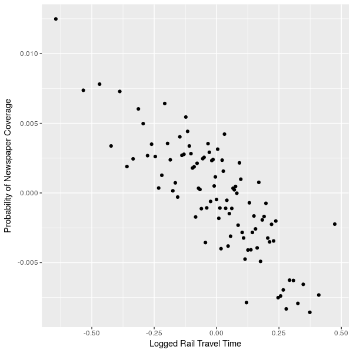 --- class: center, middle ### Effects of Betweenness Centrality on Pr(Mention) 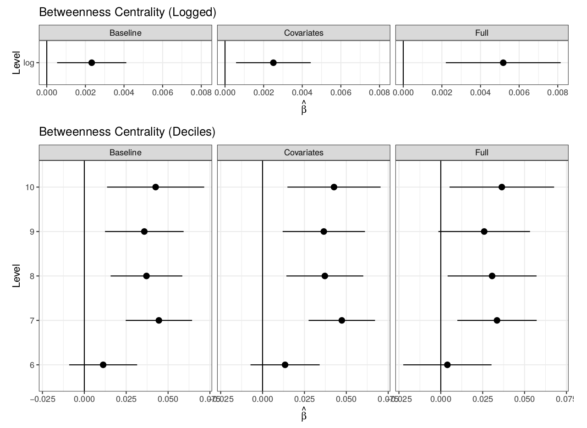 --- .left-column[ ## Analysis ### Reach ] .right-column[ ### Effects **not explained** by: * National trends in rail network *and* newspaper coverage (Year FE) * Some counties attract railroads *and* newspaper coverage (County FE/Covariates) * Endogenous placement of railroads ] --- .left-column[ ## Analysis ### Reach ### Criticism ] .right-column[ ### Four implications of the argument ##### Greater reach yields criticism, fewer lynchings. ##### **Coverage** of lynching is **more critical**: ##### ![check][] (3) as the **distance** from the lynching to the newspaper **increases**. ##### Lynching **declines faster**: ##### (4) in places with **more exposure** to national public sphere ] [check]:./check-mark-3-24.png --- .left-column[ ## Analysis ### Reach ### Criticism ] .right-column[ ### Observations * **lynching-issue dyads** *with coverage* within one-week window * **Criticism**: `$$AntiLynchingKeyWords - ProLynchingKeyWords$$` ### Design * **Fixed effects** for: * total matching keywords * unique lynching events * year ] --- class: center, middle ## Criticism of Lynching across Distance 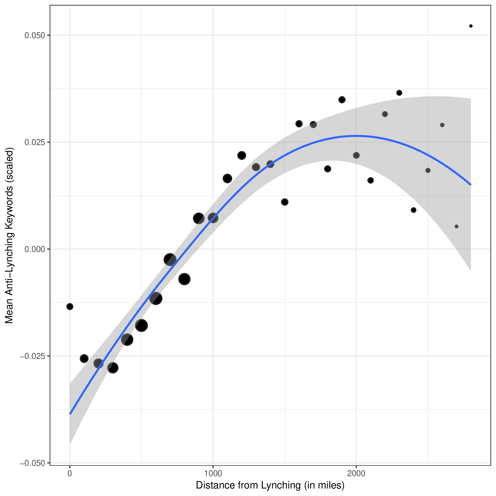 --- .left-column[ ## Analysis ### Reach ### Criticism ] .right-column[ ### Pattern **not expained by**: * Distant coverage using fewer overall words (Keyword FE) * Heinous lynchings being more newsworthy and worthy of criticism (Lynching Event FE) * Trends over time for more distant coverage *and* more criticism (Year FE) ] --- .left-column[ ## Analysis ### Reach ### Criticism ### Lynchings ] .right-column[ ### Four implications of the argument ##### Greater reach yields criticism, fewer lynchings. ##### **Coverage** of lynching is **more critical**: ##### ![check][] (3) as the **distance** from the lynching to the newspaper **increases**. ##### Lynching **declines faster**: ##### ![check][] (4) in places with **more exposure** to national public sphere ] [check]:./check-mark-3-24.png --- .left-column[ ## Analysis ### Reach ### Criticism ### Lynchings ] .right-column[ ### Observations * **county-year panel**: 3109 counties from 1880 to 1900 * **Lynching**: *any* lynchings in a county-year * **Exposure**: travel-time weighted "[access](#access)" to newspaper audiences ### Design * Year FE * County FE/Lagged Dependent Variable * Economic, demographic, and rail-construction covariates ] --- class: center, middle name: access_table ### [Access](#access) to daily newspaper circulation inhibits lynching <img src="./figures/circ_access.png" width="100%" height="75%"</img> --- .left-column[ ## Analysis ### Reach ### Criticism ### Lynchings ] .right-column[ ### Effect **not expained** by: * Trends toward fewer lynchings; more newspaper circulation (Year FE) * County propensity to have lynching (County FE) * Economic/demographic changes in counties (County Covariates) * Local railroad construction * "Access" to something other than media audiences (e.g., population) ] --- class: center, middle ### Exposure to media audiences, not population. 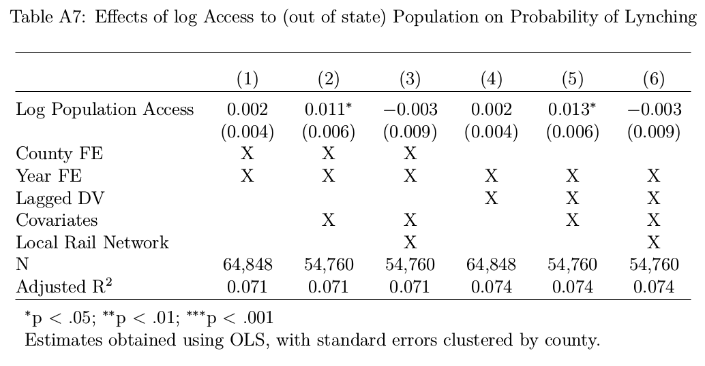 --- template:inverse ## Conclusion --- .left-column[ ##Conclusion ] .right-column[ ### Changing Media Coverage - changed the **audience** for violence, invoking different norms - made it possible for **victims** of violence to challenge norms upholding lynching Change in norms increased the **cost of lynching** - Coordination ] --- .left-column[ ##Conclusion ] .right-column[ ### Changing Media Coverage - it is also possible to **contract** the reach of publicity about violence - it is possible to **reduce** inclusion Rise of the Klan in 1860s-1870s: - denied existence of Klan/violence ("Fake News") - discredited messengers - eliminated Republican newspapers/controlled telegraph - move from covert to overt violence ] --- .left-column[ ##Conclusion ] .right-column[ Norm changes not always **good**: - evidence that films spreading white supremacist ideas **increased lynching** - arguments **against** lynching emphasized **legitimacy** of violence by state and police, not equality for African Americans Raises questions: - What other tools can reduce ethnic conflict? ] --- --- template:inverse #Extra slides --- name:extras #### Argument - [conditions for effects](#effect_conditions) - [newspaper partisanship](#partisanship) - [discourse shifts over time](#discourse_shift_time) #### Data - [digitization rates by time](#digitization_time) - [coverage validation (window)](#coverage_window) - [coverage validation (accuracy)](#coverage_validation) - [discourse keywords](#keywords) - [keyword validation](#keyword_validation) - [discourse measure](#discourse_measure) - [media access measure](#access) #### Analysis - [model specification](#equations) - [coverage over distance](#coverage_over_distance) - [coverage results (aggregate)](#aggregate_result) - [effects over distance](#distance_result) - [travel time table](#travel_time_table) - [limits](#limits) - [extensions](#railroad_extension) --- template:inverse ## Extras: Argument and Evidence --- name:effect_conditions .left-column[ ##Argument ### Violence ### Publicity ] .right-column[ ### Under some conditions... 1. **News of violence reaches new audience** 2. **New audience is interested** 3. **New audience is critical/persuaded by victims** 4. **News of criticism reaches locality** 5. Locals value relationship/reputation with audience ### ... increasing publicity can 1. **Challenge local hegemony of pro-violence discourses** ] --- .left-column[ ##Argument ### Violence ### Publicity ] .right-column[ ### Under some conditions... 1. **News of violence reaches new audience** 2. **New audience is interested** 3. **New audience is critical/persuaded by victims** 4. **News of criticism reaches locality** 5. **Locals value relationship/reputation with audience** ### ... increasing publicity can 1. Challenge local hegemony of pro-violence discourses 2. **Increase reputational costs to endorse or tacitly approve violence** ] --- .left-column[ ##Argument ### Violence ### Publicity ] .right-column[ ### Under some conditions... 1. **News of violence reaches new audience** 2. **New audience is interested** 3. **New audience is critical/persuaded by victims** 4. **News of criticism reaches locality** 5. **Locals value relationship/reputation with audience** ### ... increasing publicity can 1. Challenge local hegemony of pro-violence discourses 2. Increase reputational costs to endorse or tacitly approve violence 3. **Increase costs of permitting violence to occur** ] --- class: center, middle name: partisanship Fraction of daily Republican papers Republican by region 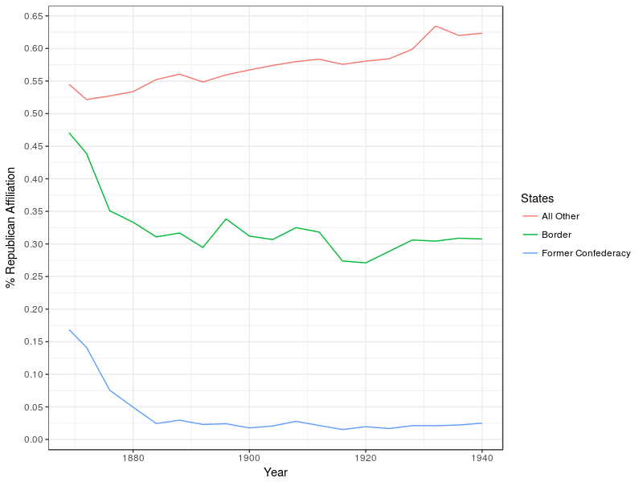 [extras](#extras) --- class: center, middle Fraction of all papers Republican (south) <img src="./figures/southern_paper_gop.png" width="80%" height="75%"</img> [extras](#extras) --- class: center, middle name: discourse_shift_time Average Criticism over Time 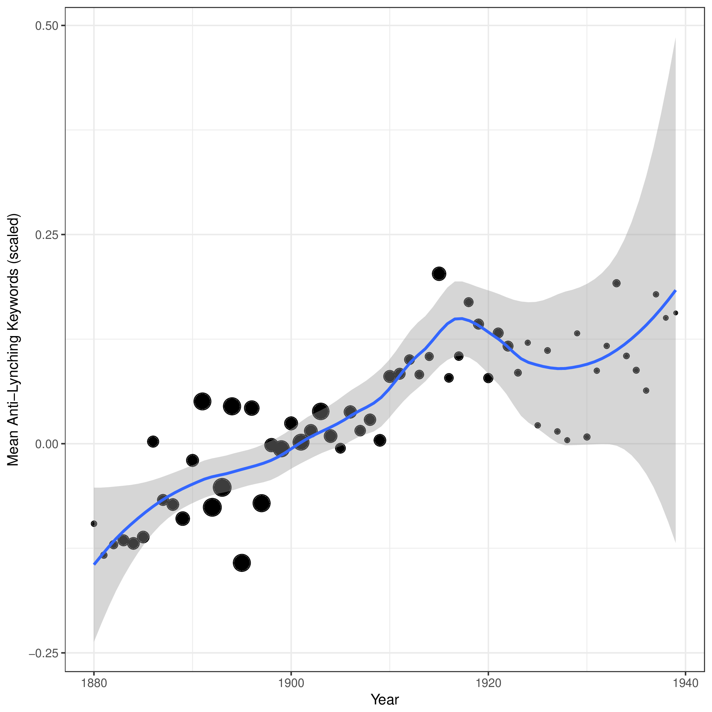 [extras](#extras) --- template:inverse ## Extras: Data --- class: center, middle name: digitization_time Digitized Newspaper Issues by Year <img src="./figures/digitized_by_year.png" width="80%" height="75%"</img> [back](#newspaper_data) [extras](#extras) --- class: center, middle name:coverage_window Fraction of event-related articles from time of event <img src="./figures/coverage_to_date.png" width="80%" height="75%"</img> [extras](#extras) --- class: center, middle name:coverage_validation TPR/PPV of article-event matching over time from event 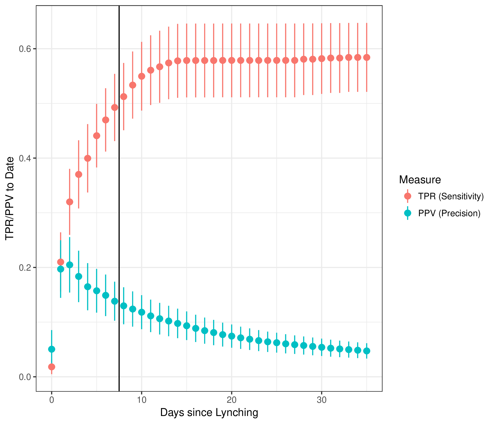 [extras](#extras) --- name:keywords 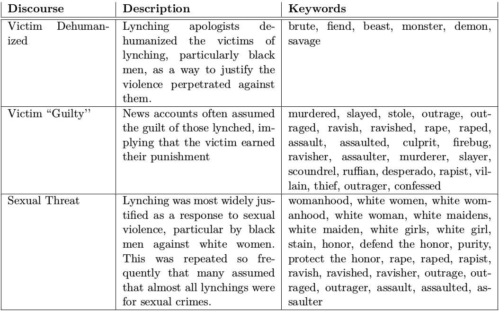 [extras](#extras) --- 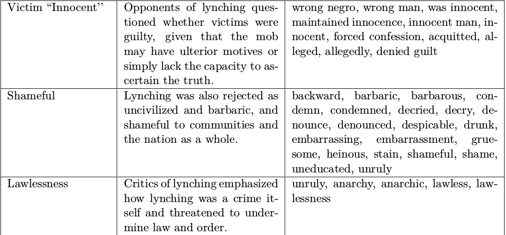 [extras](#extras) --- name:keyword_validation 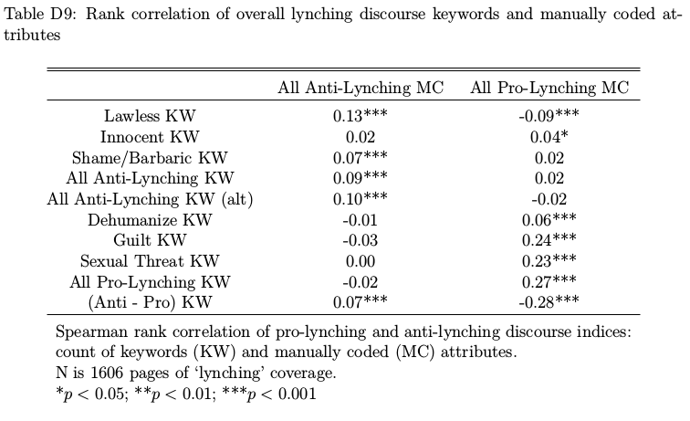 [extras](#extras) --- name:discourse_measure ### Discourse scaling `$$\begin{equation}\label{eq:discourse_scale} Criticism_k = \left( \sum_{i=1}^{n_a} AntiLynchingWord_{ik} \right) - \left(\sum_{j=1}^{n_p} ProLynchingWord_{jk} \right) \end{equation}$$` [extras](#extras) [back](#newspaper_data) --- name:access ### Media Access Media access in **county** `\(i\)` is the average of: * `\(NewspaperCirculation_j\)` (total circulation of daily newspapers in a county `\(j\)`) * for **all other counties** `\(j\)`; `\(i \neq j\)`; * Weighted by the inverse of `\(\tau_{ij}\)` (railroad travel time between `\(i\)` and `\(j\)`) `$$MediaAccess_i = \sum\limits_{i \neq j}^{j} NewspaperCirculation_j * \tau_{ij}^{-1}$$` [extras](#extras) [return](#access_table) --- template:inverse ## Extras: Analysis --- name:equations ##Equations ### Coverage Model `$$\begin{equation}\label{eq:coverage_dyads} \begin{split} Y_{ijt} =& \alpha_{year} + \alpha_{i} + \alpha_{j} + \boldsymbol{\delta}\mathbf{Centrality_{it}} + \\ &\boldsymbol{\beta}\mathbf{Distance_{ijt}} + \boldsymbol{\gamma}\mathbf{X_{it}} + \boldsymbol{\lambda}\mathbf{W_{jt}} + \\ &\varepsilon_{i} + \varepsilon_{j} \end{split} \end{equation}$$` ### Lynching model `$$\begin{equation}\label{eq:lynching} \begin{split} Lynchings_{it} = \alpha_i + \alpha_t + \beta_1 Access_{it} + \mathbf{X_{it}\beta} + \varepsilon_{county_i} \end{split} \end{equation}$$` [extras](#extras) --- class: center, middle name: coverage_over_distance Probability of lynching mention by distance <img src="./figures/rawDistance_Article.svg" width="75%" height="75%"</img> --- name: aggregate_result Centrality Results (aggregated to the event, fraction of papers) 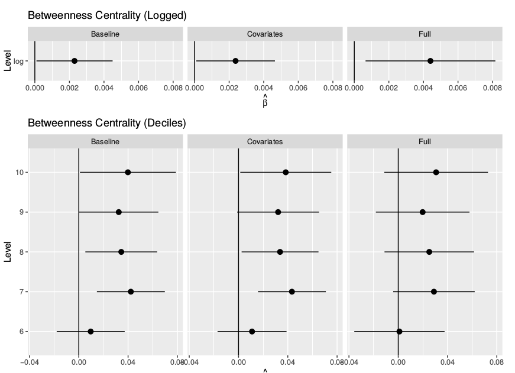 [extras](#extras) --- name: distance_result Effect across Distance 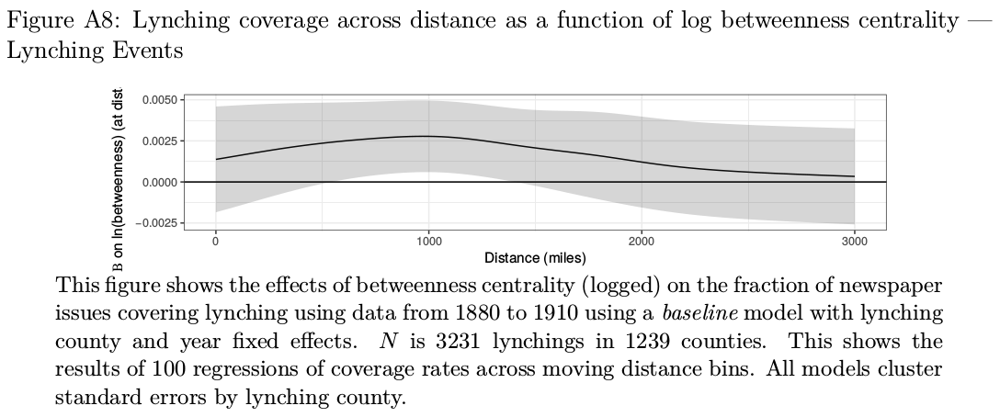 [extras](#extras) --- name:travel_time_table <img src="./figures/time_effects.png" width="100%" height="75%"</img> --- name:limits .left-column[ ## Analysis ### Limits [extras](#extras) ] .right-column[ ###Railroads Endogenous? * but network attributes not locally determined * conditioned on local railroad construction ###Alternative interpretations * Importance, not information * Condition on population, economic output * Access to circulation, not to population * Reduced or hidden lynchings? * "Supply" or "demand"? ###Text * Broad but limited depth * Keywords are drastic simplification * [Validation](#keyword_validation): manual coding ] --- name:railroad_extension .left-column[ ##Extension ###Railroads ### Telegraph [extras](#extras) ] .right-column[ ###Railroad networks * Railroad stations for each year between 1880 and 1910 * Scanned station lists for each year * Digitizing text, geocoding * Proximity to rail stations ### Telegraph Offices * Telegraph offices * Scanned lists * Digitizing text, geocoding ] --- class: center, middle <img src="./figures/official_guide.png" height="60%" width = "60%" </img> [extras](#extras) --- template:inverse <iframe width='100%' height='95%' frameborder='0' src='https://mdweaver.github.io/station_map' allowfullscreen webkitallowfullscreen mozallowfullscreen oallowfullscreen msallowfullscreen></iframe> [extras](#extras)